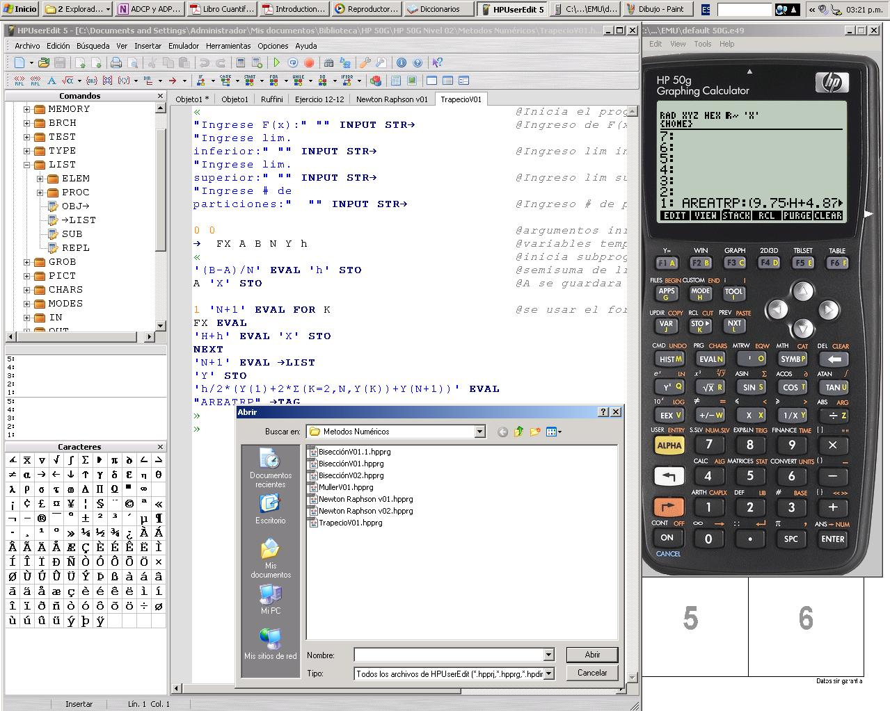
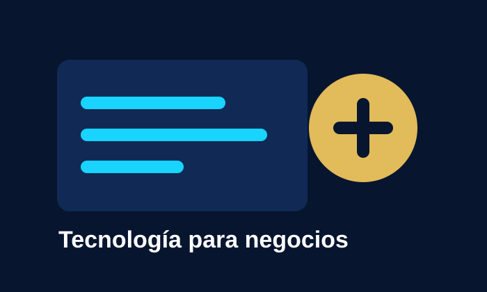

CompañÃa peruana de tecnologÃa aplicada
TecnologÃa aplicada para investigar, construir, enseñar e innovar
Desarrollamos soluciones en software, hardware, educación técnica, investigación aplicada, construcción, metalmecánica, prótesis y órtesis desde Perú para clientes, profesionales, empresas e instituciones.
Tecprog World E.I.R.L. es una empresa peruana de tecnologÃa aplicada con unidades de negocio orientadas a investigación, software, hardware, educación, construcción, metalmecánica, prótesis y órtesis.
Un ecosistema empresarial tecnológico
LÃneas de negocio
Tecprog World E.I.R.L. opera mediante unidades especializadas para atender necesidades de formación, software, comercio tecnológico, ingenierÃa, salud, construcción, prototipado y proyectos digitales.
TecnologÃa con base en ingenierÃa
Capacidades técnicas para problemas reales
Tecprog World E.I.R.L. integra experiencia en ingenierÃa mecánica de fluidos, desarrollo de software, electrónica aplicada, modelamiento numérico, automatización y soluciones digitales. Esta base técnica permite construir servicios, cursos y productos orientados a problemas reales de empresas, profesionales e instituciones.
TW Educa
Cursos destacados
Formación especializada para profesionales, estudiantes, equipos técnicos e instituciones que necesitan herramientas aplicadas.
TW Innova
Software y soluciones digitales
Desarrollo de software a medida, sistemas web, plugins, automatización, dashboards y soluciones comerciales conectadas a WhatsApp.
Servicios técnicos y de ingenierÃa
ConsultorÃa, modelamiento y desarrollo
Servicios profesionales para simulaciones CFD, modelamiento hidráulico, GIS, procesamiento de datos, expedientes, automatización y proyectos técnicos.
TW Salud y Vida / TW Bionic
Prototipado biomédico y soluciones inclusivas
Diseño de prótesis, órtesis, modelado CAD, impresión 3D, instrumentación aplicada y soluciones de apoyo técnico para salud.
Tecprog World Store
Productos y recursos digitales
Plantillas digitales, manuales PDF, recursos para ingenierÃa, packs de cursos, materiales descargables, licencias y demos.
Material bibliografico TW Educa
Compendios y guias tecnicas
PDF finales optimizados para apoyar cursos en vivo, cursos grabados y asesorias tecnicas de Tecprog World E.I.R.L.

20 paginasTW Educa · Calculadoras cientificas
Programacion en Calculadora HP 50G para Ingenieria
Compendio piloto con RPN, variables, matrices, ecuaciones, User RPL introductorio y proyecto final.

20 paginasTW Educa · GIS e ingenieria
QGIS Basico para Ingenieria y Gestion Territorial
Guia tecnica con fundamentos SIG, capas, CRS, simbologia, tablas, geoprocesamiento y diseno de mapas.
Proyectos
Innovación con aplicación real
Desarrollamos soluciones para educación, software, ingenierÃa, salud, construcción y comercio tecnológico con enfoque práctico y escalable.
Software y automatización
Portales web, dashboards, plugins, aplicaciones de escritorio y flujos de trabajo con Python.
IngenierÃa y simulación
Modelamiento, GIS, CFD, análisis técnico, estudios especializados y documentación para proyectos.
Salud, prototipado e inclusión
Prótesis, órtesis, prototipos biomédicos, impresión 3D e instrumentación aplicada.
Catálogos especializados
Pagos y cotizaciones
Solicita información, cotización o inscripción
Los precios son referenciales y pueden variar según alcance, modalidad, fecha de inscripción, requerimientos y promociones vigentes.
Consulta
EscrÃbenos por WhatsApp para confirmar disponibilidad, alcance o vacantes.
Cotiza
Recibe propuesta, precio referencial en soles e información para clientes internacionales.
Paga
Pagos nacionales por QR, transferencia o coordinación directa. PayPal disponible para clientes internacionales.
Canales oficiales
Redes sociales de Tecprog World
Canales activos para comunicación institucional, unidades de negocio, cursos, proyectos y novedades.
Video institucional
Conoce la historia y visión de Tecprog World
En esta entrevista presentamos la visión empresarial, lÃneas de trabajo y el enfoque tecnológico de Tecprog World E.I.R.L.
Contacto empresarial
Compra, cotiza o agenda una conversación
Atendemos solicitudes nacionales e internacionales para cursos, software, servicios, productos, materiales, prototipos y proyectos a medida.
WhatsApp: +51 952 354 282 · Correo: grupotecprog@gmail.com